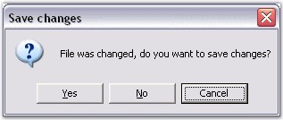

This section demonstrates how changes made to the contents of the Edit Control can be saved or discarded.
SaveOnClose Property
This property specifies whether the default Save Changes prompt should be displayed on closing the Edit Control.
|
[C#]
// Disables the default Save Changes prompt that appears when the form hosting Edit Control containing unsaved contents is closed. this.editControl1.SaveOnClose = false; |
|
[VB.NET]
' Disables the default Save Changes prompt that appears when the form hosting Edit Control containing unsaved contents is closed. Me.editControl1.SaveOnClose = False |

Figure 62: Default Save Changes Prompt Dialog Box
Saving Changes without displaying the Save Changes Prompt
When the SaveOnClose property is set to False, the default Save Changes prompt does not appear. The user should perform some custom Save routine in the Closing event handler of the host form, to save the unsaved contents in the Edit Control; If not they will be lost.
|
[C#]
private void Form1_Closing(object sender, System.ComponentModel.CancelEventArgs e) { if (this.editControl1.SaveOnClose == false) { if (this.editControl1.SaveModified() == true) // Perform custom Save routine or show custom Save Changes dialog or set Cancel to False. e.Cancel = false; else e.Cancel = true; } } |
|
[VB.NET]
Private Sub Form1_Closing(ByVal sender As Object, ByVal e As System.ComponentModel.CancelEventArgs) Handles MyBase.Closing If Me.editControl1.SaveOnClose = False Then If Me.editControl1.SaveModified() = True Then ' Perform custom Save routine or show custom Save Changes dialog or set Cancel to False. e.Cancel = False Else e.Cancel = True End If End If End Sub 'Form1_Closing |
Saving Changes using the Save Changes Prompt
When the SaveOnClose property is set to True, the default Save Changes prompt appears on closing the Edit Control without saving the contents. Click Yes to save the changes, No to discard the changes, or Cancel to close the Save Changes prompt.
The above task can be further customized by handling the Closing event of Edit Control. The Closing event is triggered just before a file or stream is closed in the Edit Control.
|
[C#]
private void editControl1_Closing(object sender, Syncfusion.Windows.Forms.Edit.StreamCloseEventArgs e) { // Cancel the file or stream closing action. e.Action = SaveChangesAction.Cancel;
// Close the file or stream without saving the unsaved contents, the changes will be lost forever. e.Action = SaveChangesAction.Discard;
// Silently saves the unsaved contents to the currently open file or stream. // If the contents have not been saved to a file or stream as yet, the Save Changes prompt is displayed. e.Action = SaveChangesAction.Save;
// Displays the default Save Changes prompt if there are unsaved contents when the file or stream is closed. e.Action = SaveChangesAction.ShowDialog; } |
|
[VB.NET]
Private Sub editControl1_Closing(ByVal sender As Object, ByVal e As Syncfusion.Windows.Forms.Edit.StreamCloseEventArgs) Handles EditControl1.StreamClose ' Cancel the file or stream closing action. e.Action = SaveChangesAction.Cancel
' Close the file or stream without saving the unsaved contents, the changes will be lost forever. e.Action = SaveChangesAction.Discard
' Silently saves the unsaved contents to the currently open file or stream. ' If the contents have not been saved to a file or stream as yet, the Save Changes prompt is displayed e.Action = SaveChangesAction.Save
' Displays the default Save Changes prompt if there are unsaved contents when the file or stream is closed. e.Action = SaveChangesAction.ShowDialog End Sub |
 Note: The default value of e.Action is
SaveChangesAction.ShowDialog.
Note: The default value of e.Action is
SaveChangesAction.ShowDialog.
Close Method
This method closes the currently open file or stream and displays the Edit Control in the read-only mode, until a new file or stream is opened.
|
Edit Control Method |
Description |
|
Close |
Closes stream, makes control readonly. |
|
[C#]
// Closes the currently open file or stream in the Edit Control. this.editControl1.Close(); |
|
[VB.NET]
' Closes the currently open file or stream in the Edit Control. Me.editControl1.Close() |
See Also
Creating, Loading and Saving a File, Loading and Saving Contents